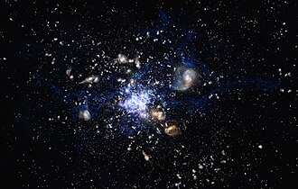

TOP
A galaxy is a system of stars, stellar remnants, interstellar gas, dust, and dark matter bound together by gravity. The word is derived from the Greek galaxias , literally 'milky', a reference to the Milky Way galaxy that contains the Solar System. Galaxies, averaging an estimated 100 billion stars,[3] range in size from dwarfs with less than a hundred million stars, to the largest galaxies known – supergiants with one hundred trillion stars, each orbiting its galaxy's center of mass. Most of the mass in a typical galaxy is in the form of dark matter, with only a few percent of that mass visible in the form of stars and nebulae. Supermassive black holes are a common feature at the centres of galaxies. Galaxies are categorized according to their visual morphology as elliptical, spiral, or irregular. Many are thought to have supermassive black holes at their centers. The Milky Way's central black hole, known as Sagittarius A*, has a mass four million times greater than the Sun.[6] It is estimated that there are between 200 billion (2×1011) to 2 trillion[8] galaxies in the observable universe. Most galaxies are 1,000 to 100,000 parsecs in diameter (approximately 3,000 to 300,000 light years) and are separated by distances on the order of millions of parsecs (or megaparsecs). For comparison, the Milky Way has a diameter of at least 26,800 parsecs (87,400 ly) and is separated from the Andromeda Galaxy (with diameter of about 152,000 ly), its nearest large neighbor, by 780,000 parsecs (2.5 million ly.) The space between galaxies is filled with a tenuous gas (the intergalactic medium) with an average density of less than one atom per cubic meter. Most galaxies are gravitationally organized into groups, clusters and superclusters. The Milky Way is part of the Local Group, which it dominates along with the Andromeda Galaxy. The group is part of the Virgo Supercluster. At the largest scale, these associations are generally arranged into sheets and filaments surrounded by immense voids.[9] Both the Local Group and the Virgo Supercluster are contained in a much larger cosmic structure named Laniakea.[10]
Etymology
The word galaxy was borrowed via French and Medieval Latin from the Greek term for the Milky Way, galaxías 'milky (circle)', named after its appearance as a milky band of light in the sky. In Greek mythology, Zeus places his son born by a mortal woman, the infant Heracles, on Hera's breast while she is asleep so the baby will drink her divine milk and thus become immortal. Hera wakes up while breastfeeding and then realizes she is nursing an unknown baby: she pushes the baby away, some of her milk spills, and it produces the band of light known as the Milky Way.[13][14] In the astronomical literature, the capitalized word "Galaxy" is often used to refer to the Milky Way galaxy, to distinguish it from the other galaxies in the observable universe. The English term Milky Way can be traced back to a story by Chaucer c. 1380:
Nomenclature
Millions of galaxies have been catalogued, but only a few have well-established names, such as the Andromeda Galaxy, the Magellanic Clouds, the Whirlpool Galaxy, and the Sombrero Galaxy. Astronomers work with numbers from certain catalogues, such as the Messier catalogue, the NGC (New General Catalogue), the IC (Index Catalogue), the CGCG (Catalogue of Galaxies and of Clusters of Galaxies), the MCG (Morphological Catalogue of Galaxies), the UGC (Uppsala General Catalogue of Galaxies), and the PGC (Catalogue of Principal Galaxies, also known as LEDA). All the well-known galaxies appear in one or more of these catalogs but each time under a different number. For example, Messier 109 (or "M109") is a spiral galaxy having the number 109 in the catalog of Messier. It also has the designations NGC 3992, UGC 6937, CGCG 269–023, MCG +09-20-044, and PGC 37617 (or LEDA 37617). Millions of fainter galaxies are known by their identifiers in sky surveys such as the Sloan Digital Sky Survey, in which M109 is cataloged as SDSS J115735.97+532228.9.
observation histroy
The realization that we live in a galaxy that is one among many parallels major discoveries about the Milky Way and other nebulae.
milky way
Greek philosopher Democritus (450–370 BCE) proposed that the bright band on the night sky known as the Milky Way might consist of distant stars. Aristotle (384–322 BCE), however, believed the Milky Way was caused by "the ignition of the fiery exhalation of some stars that were large, numerous and close together" and that the "ignition takes place in the upper part of the atmosphere, in the region of the World that is continuous with the heavenly motions. Neoplatonist philosopher Olympiodorus the Younger (c. 495–570 CE) was critical of this view, arguing that if the Milky Way was sublunary (situated between Earth and the Moon) it should appear different at different times and places on Earth, and that it should have parallax, which it did not. In his view, the Milky Way was celestial. According to Mohani Mohamed, Arabian astronomer Alhazen (965–1037) made the first attempt at observing and measuring the Milky Way's parallax, and he thus "determined that because the Milky Way had no parallax, it must be remote from the Earth, not belonging to the atmosphere." Persian astronomer al-Bīrūnī (973–1048) proposed the Milky Way galaxy was "a collection of countless fragments of the nature of nebulous stars."[21] Andalusian astronomer Ibn Bâjjah ("Avempace", d. 1138) proposed that it was composed of many stars that almost touched one another, and appeared to be a continuous image due to the effect of refraction from sublunary material,[17][22] citing his observation of the conjunction of Jupiter and Mars as evidence of this occurring when two objects were near.[17] In the 14th century, Syrian-born Ibn Qayyim proposed the Milky Way galaxy was "a myriad of tiny stars packed together in the sphere of the fixed stars."[23] Actual proof of the Milky Way consisting of many stars came in 1610 when the Italian astronomer Galileo Galilei used a telescope to study it and discovered it was composed of a huge number of faint stars.[24][25] In 1750, English astronomer Thomas Wright, in his An Original Theory or New Hypothesis of the Universe, correctly speculated that it might be a rotating body of a huge number of stars held together by gravitational forces, akin to the Solar System but on a much larger scale, and that the resulting disk of stars could be seen as a band on the sky from a perspective inside it.[26][27] In his 1755 treatise, Immanuel Kant elaborated on Wright's idea about the Milky Way's structure.[28] The first project to describe the shape of the Milky Way and the position of the Sun was undertaken by William Herschel in 1785 by counting the number of stars in different regions of the sky. He produced a diagram of the shape of the galaxy with the Solar System close to the center.[29][30] Using a refined approach, Kapteyn in 1920 arrived at the picture of a small (diameter about 15 kiloparsecs) ellipsoid galaxy with the Sun close to the center. A different method by Harlow Shapley based on the cataloguing of globular clusters led to a radically different picture: a flat disk with diameter approximately 70 kiloparsecs and the Sun far from the center.[27] Both analyses failed to take into account the absorption of light by interstellar dust present in the galactic plane; but after Robert Julius Trumpler quantified this effect in 1930 by studying open clusters, the present picture of the Milky Way galaxy emerged.[31]
Distinction from other nebulae
A few galaxies outside the Milky Way are visible on a dark night to the unaided eye, including the Andromeda Galaxy, Large Magellanic Cloud, Small Magellanic Cloud, and the Triangulum Galaxy. In the 10th century, Persian astronomer Al-Sufi made the earliest recorded identification of the Andromeda Galaxy, describing it as a "small cloud".[32] In 964, he probably mentioned the Large Magellanic Cloud in his Book of Fixed Stars (referring to "Al Bakr of the southern Arabs",[33] since at a declination of about 70° south it was not visible where he lived); it was not well known to Europeans until Magellan's voyage in the 16th century.[34][33] The Andromeda Galaxy was later independently noted by Simon Marius in 1612.[32] In 1734, philosopher Emanuel Swedenborg in his Principia speculated that there might be other galaxies outside that were formed into galactic clusters that were minuscule parts of the universe that extended far beyond what could be seen. These views "are remarkably close to the present-day views of the cosmos."[35] In 1745, Pierre Louis Maupertuis conjectured that some nebula-like objects were collections of stars with unique properties, including a glow exceeding the light its stars produced on their own, and repeated Johannes Hevelius's view that the bright spots were massive and flattened due to their rotation.[36] In 1750, Thomas Wright correctly speculated that the Milky Way was a flattened disk of stars, and that some of the nebulae visible in the night sky might be separate Milky Ways.[27][37]
Photograph of the "Great Andromeda Nebula" by Isaac Roberts, 1899, later identified as the Andromeda Galaxy
Toward the end of the 18th century, Charles Messier compiled a catalog containing the 109 brightest celestial objects having nebulous appearance. Subsequently, William Herschel assembled a catalog of 5,000 nebulae.[27] In 1845, Lord Rosse constructed a new telescope and was able to distinguish between elliptical and spiral nebulae. He also managed to make out individual point sources in some of these nebulae, lending credence to Kant's earlier conjecture.[38]
In 1912, Vesto Slipher made spectrographic studies of the brightest spiral nebulae to determine their composition. Slipher discovered that the spiral nebulae have high Doppler shifts, indicating that they are moving at a rate exceeding the velocity of the stars he had measured. He found that the majority of these nebulae are moving away from us.[39][40]
In 1917, Heber Curtis observed nova S Andromedae within the "Great Andromeda Nebula" (as the Andromeda Galaxy, Messier object M31, was then known). Searching the photographic record, he found 11 more novae. Curtis noticed that these novae were, on average, 10 magnitudes fainter than those that occurred within this galaxy. As a result, he was able to come up with a distance estimate of 150,000 parsecs. He became a proponent of the so-called "island universes" hypothesis, which holds that spiral nebulae are actually independent galaxies.[41]
In 1920 a debate took place between Harlow Shapley and Heber Curtis (the Great Debate), concerning the nature of the Milky Way, spiral nebulae, and the dimensions of the universe. To support his claim that the Great Andromeda Nebula is an external galaxy, Curtis noted the appearance of dark lanes resembling the dust clouds in the Milky Way, as well as the significant Doppler shift.[42]
In 1922, the Estonian astronomer Ernst Öpik gave a distance determination that supported the theory that the Andromeda Nebula is indeed a distant extra-galactic object.[43] Using the new 100-inch Mt. Wilson telescope, Edwin Hubble was able to resolve the outer parts of some spiral nebulae as collections of individual stars and identified some Cepheid variables, thus allowing him to estimate the distance to the nebulae: they were far too distant to be part of the Milky Way.[44]
In 1936 Hubble produced a classification of galactic morphology that is used to this day.[45]

Modern research
In 1944, Hendrik van de Hulst predicted that microwave radiation with wavelength of 21 cm would be detectable from interstellar atomic hydrogen gas;[46] and in 1951 it was observed. This radiation is not affected by dust absorption, and so its Doppler shift can be used to map the motion of the gas in this galaxy. These observations led to the hypothesis of a rotating bar structure in the center of this galaxy.[47] With improved radio telescopes, hydrogen gas could also be traced in other galaxies. In the 1970s, Vera Rubin uncovered a discrepancy between observed galactic rotation speed and that predicted by the visible mass of stars and gas. Today, the galaxy rotation problem is thought to be explained by the presence of large quantities of unseen dark matter.[48][49] Beginning in the 1990s, the Hubble Space Telescope yielded improved observations. Among other things, its data helped establish that the missing dark matter in this galaxy could not consist solely of inherently faint and small stars.[51] The Hubble Deep Field, an extremely long exposure of a relatively empty part of the sky, provided evidence that there are about 125 billion (1.25×1011) galaxies in the observable universe.[52] Improved technology in detecting the spectra invisible to humans (radio telescopes, infrared cameras, and x-ray telescopes) allows detection of other galaxies that are not detected by Hubble. Particularly, surveys in the Zone of Avoidance (the region of sky blocked at visible-light wavelengths by the Milky Way) have revealed a number of new galaxies.[53] A 2016 study published in The Astrophysical Journal, led by Christopher Conselice of the University of Nottingham, used 20 years of Hubble images to estimate that the observable universe contained at least two trillion (2×1012) galaxies.[54][55] However, later observations with the New Horizons space probe from outside the zodiacal light reduced this to roughly 200 billion (2×1011).[56][57]
Types and morphology
Galaxies come in three main types: ellipticals, spirals, and irregulars. A slightly more extensive description of galaxy types based on their appearance is given by the Hubble sequence. Since the Hubble sequence is entirely based upon visual morphological type (shape), it may miss certain important characteristics of galaxies such as star formation rate in starburst galaxies and activity in the cores of active galaxies.[5] The center of many galaxies is thought to have supermassive black holes (see also: central massive object and active galactic nucleus.) The center of the Milky Way is called the Galactic Center.
Ellipticals
The Hubble classification system rates elliptical galaxies on the basis of their ellipticity, ranging from E0, being nearly spherical, up to E7, which is highly elongated. These galaxies have an ellipsoidal profile, giving them an elliptical appearance regardless of the viewing angle. Their appearance shows little structure and they typically have relatively little interstellar matter. Consequently, these galaxies also have a low portion of open clusters and a reduced rate of new star formation. Instead, they are dominated by generally older, more evolved stars that are orbiting the common center of gravity in random directions. The stars contain low abundances of heavy elements because star formation ceases after the initial burst. In this sense they have some similarity to the much smaller globular clusters.
Type-cD galaxies
The largest galaxies are the type-cD galaxies. First described in 1964 by a paper by Thomas A. Matthews and others, they are a subtype of the more general class of D galaxies, which are giant elliptical galaxies, except that they are much larger. They are popularly known as the supergiant elliptical galaxies and constitute the largest and most luminous galaxies known. These galaxies feature a central elliptical nucleus with an extensive, faint halo of stars extending to megaparsec scales.[60] The profile of their surface brightnesses as a function of their radius (or distance from their cores) falls off more slowly than their smaller counterparts.[61] The formation of these cD galaxies remains an active area of research, but the leading model is that they are the result of the mergers of smaller galaxies in the environments of dense clusters, or even those outside of clusters with random overdensities. These processes are the mechanisms that drive the formation of fossil groups or fossil clusters, where a large, relatively isolated, supergiant elliptical resides in the middle of the cluster and are surrounded by an extensive cloud of X-rays as the residue of these galactic collisions. Another older model posits the phenomenon of cooling flow, where the heated gases in clusters collapses towards their centers as they cool, forming stars in the process, a phenomenon observed in clusters such as Perseus,[62] and more recently in the Phoenix Cluster.
Shell galaxy
A shell galaxy is a type of elliptical galaxy where the stars in its halo are arranged in concentric shells. About one-tenth of elliptical galaxies have a shell-like structure, which has never been observed in spiral galaxies. These structures are thought to develop when a larger galaxy absorbs a smaller companion galaxy—that as the two galaxy centers approach, they start to oscillate around a center point, and the oscillation creates gravitational ripples forming the shells of stars, similar to ripples spreading on water. For example, galaxy NGC 3923 has over 20 shells.
Spirals
Spiral galaxies resemble spiraling pinwheels. Though the stars and other visible material contained in such a galaxy lie mostly on a plane, the majority of mass in spiral galaxies exists in a roughly spherical halo of dark matter which extends beyond the visible component, as demonstrated by the universal rotation curve concept.[64] Spiral galaxies consist of a rotating disk of stars and interstellar medium, along with a central bulge of generally older stars. Extending outward from the bulge are relatively bright arms. In the Hubble classification scheme, spiral galaxies are listed as type S, followed by a letter (a, b, or c) which indicates the degree of tightness of the spiral arms and the size of the central bulge. An Sa galaxy has tightly wound, poorly defined arms and possesses a relatively large core region. At the other extreme, an Sc galaxy has open, well-defined arms and a small core region.[65] A galaxy with poorly defined arms is sometimes referred to as a flocculent spiral galaxy; in contrast to the grand design spiral galaxy that has prominent and well-defined spiral arms.[66] The speed in which a galaxy rotates is thought to correlate with the flatness of the disc as some spiral galaxies have thick bulges, while others are thin and dense.[67] In spiral galaxies, the spiral arms do have the shape of approximate logarithmic spirals, a pattern that can be theoretically shown to result from a disturbance in a uniformly rotating mass of stars. Like the stars, the spiral arms rotate around the center, but they do so with constant angular velocity. The spiral arms are thought to be areas of high-density matter, or "density waves".[68] As stars move through an arm, the space velocity of each stellar system is modified by the gravitational force of the higher density. (The velocity returns to normal after the stars depart on the other side of the arm.) This effect is akin to a "wave" of slowdowns moving along a highway full of moving cars. The arms are visible because the high density facilitates star formation, and therefore they harbor many bright and young stars.[69]
Barred spiral galaxy
A majority of spiral galaxies, including the Milky Way galaxy, have a linear, bar-shaped band of stars that extends outward to either side of the core, then merges into the spiral arm structure.[70]
In the Hubble classification scheme, these are designated by an SB, followed by a lower-case letter (a, b or c) which indicates the form of the spiral arms (in the same manner as the categorization of normal spiral galaxies). Bars are thought to be temporary structures that can occur as a result of a density wave radiating outward from the core, or else due to a tidal interaction with another galaxy.[71] Many barred spiral galaxies are active, possibly as a result of gas being channeled into the core along the arms.[72]
Our own galaxy, the Milky Way, is a large disk-shaped barred-spiral galaxy[73] about 30 kiloparsecs in diameter and a kiloparsec thick. It contains about two hundred billion (2×1011)[74] stars and has a total mass of about six hundred billion (6×1011) times the mass of the Sun.[75]

Super-luminous spiral
Recently, researchers described galaxies called super-luminous spirals. They are very large with an upward diameter of 437,000 light-years (compared to the Milky Way's 87,400 light-year diameter). With a mass of 340 billion solar masses, they generate a significant amount of ultraviolet and mid-infrared light. They are thought to have an increased star formation rate around 30 times faster than the Milky Way.[76][77]
Other morphologies
Peculiar galaxies are galactic formations that develop unusual properties due to tidal interactions with other galaxies. A ring galaxy has a ring-like structure of stars and interstellar medium surrounding a bare core. A ring galaxy is thought to occur when a smaller galaxy passes through the core of a spiral galaxy.[78] Such an event may have affected the Andromeda Galaxy, as it displays a multi-ring-like structure when viewed in infrared radiation.[79] A lenticular galaxy is an intermediate form that has properties of both elliptical and spiral galaxies. These are categorized as Hubble type S0, and they possess ill-defined spiral arms with an elliptical halo of stars[80] (barred lenticular galaxies receive Hubble classification SB0.) Irregular galaxies are galaxies that can not be readily classified into an elliptical or spiral morphology. An Irr-I galaxy has some structure but does not align cleanly with the Hubble classification scheme. Irr-II galaxies do not possess any structure that resembles a Hubble classification, and may have been disrupted.[81] Nearby examples of (dwarf) irregular galaxies include the Magellanic Clouds. An ultra diffuse galaxy (UDG) is an extremely-low-density galaxy. It may be the same size as the Milky Way, but have a visible star count only one percent of the Milky Way's. Its lack of luminosity is due to a lack of star-forming gas, resulting in old stellar populations.
Dwarfs
Despite the prominence of large elliptical and spiral galaxies, most galaxies are dwarf galaxies. They are relatively small when compared with other galactic formations, being about one hundredth the size of the Milky Way, with only a few billion stars. Ultra-compact dwarf galaxies have recently been discovered that are only 100 parsecs across.[82] Many dwarf galaxies may orbit a single larger galaxy; the Milky Way has at least a dozen such satellites, with an estimated 300–500 yet to be discovered.[83] Dwarf galaxies may also be classified as elliptical, spiral, or irregular. Since small dwarf ellipticals bear little resemblance to large ellipticals, they are often called dwarf spheroidal galaxies instead. A study of 27 Milky Way neighbors found that in all dwarf galaxies, the central mass is approximately 10 million solar masses, regardless of whether it has thousands or millions of stars. This suggests that galaxies are largely formed by dark matter, and that the minimum size may indicate a form of warm dark matter incapable of gravitational coalescence on a smaller scale.[84]
Variants
Interacting
Interactions between galaxies are relatively frequent, and they can play an important role in galactic evolution. Near misses between galaxies result in warping distortions due to tidal interactions, and may cause some exchange of gas and dust.[85][86] Collisions occur when two galaxies pass directly through each other and have sufficient relative momentum not to merge. The stars of interacting galaxies usually do not collide, but the gas and dust within the two forms interacts, sometimes triggering star formation. A collision can severely distort the galaxies' shapes, forming bars, rings or tail-like structures.[85][86] At the extreme of interactions are galactic mergers, where the galaxies' relative momentums are insufficient to allow them to pass through each other. Instead, they gradually merge to form a single, larger galaxy. Mergers can result in significant changes to the galaxies' original morphology. If one of the galaxies is much more massive than the other, the result is known as cannibalism, where the more massive larger galaxy remains relatively undisturbed, and the smaller one is torn apart. The Milky Way galaxy is currently in the process of cannibalizing the Sagittarius Dwarf Elliptical Galaxy and the Canis Major Dwarf Galaxy.[85][86]
Starburst
Stars are created within galaxies from a reserve of cold gas that forms giant molecular clouds. Some galaxies have been observed to form stars at an exceptional rate, which is known as a starburst. If they continue to do so, they would consume their reserve of gas in a time span less than the galaxy's lifespan. Hence starburst activity usually lasts only about ten million years, a relatively brief period in a galaxy's history. Starburst galaxies were more common during the universe's early history,[89] but still contribute an estimated 15% to total star production.[90]
Starburst galaxies are characterized by dusty concentrations of gas and the appearance of newly formed stars, including massive stars that ionize the surrounding clouds to create H II regions.[91] These stars produce supernova explosions, creating expanding remnants that interact powerfully with the surrounding gas. These outbursts trigger a chain reaction of star-building that spreads throughout the gaseous region. Only when the available gas is nearly consumed or dispersed does the activity end.[89]
Starbursts are often associated with merging or interacting galaxies. The prototype example of such a starburst-forming interaction is M82, which experienced a close encounter with the larger M81. Irregular galaxies often exhibit spaced knots of starburst activity.[92

Radio galaxy
A radio galaxy is a galaxy with giant regions of radio emission extending well beyond its visible structure. These energetic radio lobes are powered by jets from its active galactic nucleus.[93] Radio galaxies are classified according to their Fanaroff–Riley (FR) classifications. The FR I class are a minority class – low-luminosity sources exhibiting structures usually known as plumes which are much more elongated. The FR II class are by far the most common, exhibiting large-scale structures are called lobes: these are double, often fairly symmetrical, roughly ellipsoidal structures placed on either side of the active nucleus. Radio galaxies can also be classified as giant radio galaxies (GRGs), whose radio emissions can extend to scales of megaparsecs (3.26 million light-years). Alcyoneus is an FR II class low-excitation radio galaxy which has the largest observed radio emission, with lobed structures spanning 5 megaparsecs (16×106 ly). For comparison, another similarly sized giant radio galaxy is 3C 236, with lobes 15 million light-years across. It should however be noted that radio emissions are not always considered part of the main galaxy itself,[94] and is usually not used as a standard in measuring the physical diameter of a galaxy. For insight on how physical diameters of galaxies are measured, see section Physical diameters below. A giant radio galaxy is a special class of objects characterized by the presence of radio lobes generated by relativistic jets powered by the central galaxy's supermassive black hole. Giant radio galaxies are different from ordinary radio galaxies in that they can extend to much larger scales, reaching upwards to several megaparsecs across, far larger than the diameters of their host galaxies.
Active galaxy
Some observable galaxies are classified as "active" if they contain an active galactic nucleus (AGN).[95] A significant portion of the galaxy's total energy output is emitted by the active nucleus instead of its stars, dust and interstellar medium. There are multiple classification and naming schemes for AGNs, but those in the lower ranges of luminosity are called Seyfert galaxies, while those with luminosities much greater than that of the host galaxy are known as quasi-stellar objects or quasars. AGNs emit radiation throughout the electromagnetic spectrum from radio wavelengths to X-rays, though some of it may be absorbed by dust or gas associated with the AGN itself or with the host galaxy. The standard model for an active galactic nucleus is based on an accretion disc that forms around a supermassive black hole (SMBH) at the galaxy's core region. The radiation from an active galactic nucleus results from the gravitational energy of matter as it falls toward the black hole from the disc.[96][97] The AGN's luminosity depends on the SMBH's mass and the rate at which matter falls onto it. In about 10% of these galaxies, a diametrically opposed pair of energetic jets ejects particles from the galaxy core at velocities close to the speed of light. The mechanism for producing these jets is not well understood.[98]
Blazars
Blazars are believed to be active galaxies with a relativistic jet pointed in the direction of Earth. A radio galaxy emits radio frequencies from relativistic jets. A unified model of these types of active galaxies explains their differences based on the observer's position.[98]
LINERs
Possibly related to active galactic nuclei (as well as starburst regions) are low-ionization nuclear emission-line regions (LINERs). The emission from LINER-type galaxies is dominated by weakly ionized elements. The excitation sources for the weakly ionized lines include post-AGB stars, AGN, and shocks.[99] Approximately one-third of nearby galaxies are classified as containing LINER nuclei.[97][99][100]
Seyfert galaxy
Seyfert galaxies are one of the two largest groups of active galaxies, along with quasars. They have quasar-like nuclei (very luminous, distant and bright sources of electromagnetic radiation) with very high surface brightnesses; but unlike quasars, their host galaxies are clearly detectable.[101] Seyfert galaxies account for about 10% of all galaxies. Seen in visible light, most look like normal spiral galaxies; but when studied under other wavelengths, their cores' luminosity is equivalent to the luminosity of whole galaxies the size of the Milky Way.
Quasar
Quasars are the most energetic and distant members of active galactic nuclei. Extremely luminous, they were first identified as high redshift sources of electromagnetic energy, including radio waves and visible light, that appeared more similar to stars than to extended sources similar to galaxies. Their luminosity can be 100 times that of the Milky Way.[102]
Luminous infrared galaxy
Luminous infrared galaxies (LIRGs) are galaxies with luminosities—the measurement of electromagnetic power output—above 1011 L☉ (solar luminosities). In most cases, most of their energy comes from large numbers of young stars which heat surrounding dust, which reradiates the energy in the infrared. Luminosity high enough to be a LIRG requires a star formation rate of at least 18 M☉ yr−1. Ultra-luminous infrared galaxies (ULIRGs) are at least ten times more luminous still and form stars at rates >180 M☉ yr−1. Many LIRGs also emit radiation from an AGN. Infrared galaxies emit more energy in the infrared than all other wavelengths combined, with peak emission typically at wavelengths of 60 to 100 microns. LIRGs are uncommon in the local universe but were much more common when the universe was younger.
Formation
Current models of the formation of galaxies in the early universe are based on the ΛCDM model. About 300,000 years after the big bang, atoms of hydrogen and helium began to form, in an event called recombination. Nearly all the hydrogen was neutral (non-ionized) and readily absorbed light, and no stars had yet formed. As a result, this period has been called the "dark ages". It was from density fluctuations (or anisotropic irregularities) in this primordial matter that larger structures began to appear. As a result, masses of baryonic matter started to condense within cold dark matter halos.[125][126] These primordial structures eventually became the galaxies we see today.[127] 
Early galaxy formation
Evidence for the appearance of galaxies very early in the Universe's history was found in 2006, when it was discovered that the galaxy IOK-1 has an unusually high redshift of 6.96, corresponding to just 750 million years after the Big Bang and making it the most distant and earliest-to-form galaxy seen at that time.[128] While some scientists have claimed other objects (such as Abell 1835 IR1916) have higher redshifts (and therefore are seen in an earlier stage of the universe's evolution), IOK-1's age and composition have been more reliably established. In December 2012, astronomers reported that UDFj-39546284 is the most distant object known and has a redshift value of 11.9. The object, estimated to have existed around 380 million years[129] after the Big Bang (which was about 13.8 billion years ago),[130] is about 13.42 billion light travel distance years away. The existence of galaxies so soon after the Big Bang suggests that protogalaxies must have grown in the so-called "dark ages".[125] As of May 5, 2015, the galaxy EGS-zs8-1 is the most distant and earliest galaxy measured, forming 670 million years after the Big Bang. The light from EGS-zs8-1 has taken 13 billion years to reach Earth, and is now 30 billion light-years away, because of the expansion of the universe during 13 billion years.[131][132][133][134][135] On 17 August 2022, NASA released a large mosaic image of 690 individual frames taken by the Near Infrared Camera (NIRCam) on the James Webb Space Telescope (JWST) of numerous very early galaxies.[136][137][138] In May 2023, a study in the journal Nature identified an ultra-faint galaxy named JD1.[139] Galaxy JD1 was observed by the JWST using the near-infrared spectrograph instrument NIRSpec and was found to have a distance value of redshift z=9.79.[139] This means that JD1 was observed at 480 million years after the Big Bang when the universe was only about 4% of its present age.[139][140] Observations of this ultra-faint galaxy were aided by the effect of a gravitational lens in the galaxy cluster Abell 2744 which helped make the image of JD1 larger and 13 times brighter than it otherwise would be.[139][140] This effect and the use of the JWST's NIRCam showed JD1's structure to be three starforming clumps of dust and gas.[140] The detailed process by which the earliest galaxies formed is an open question in astrophysics. Theories can be divided into two categories: top-down and bottom-up. In top-down correlations (such as the Eggen–Lynden-Bell–Sandage [ELS] model), protogalaxies form in a large-scale simultaneous collapse lasting about one hundred million years.[142] In bottom-up theories (such as the Searle-Zinn [SZ] model), small structures such as globular clusters form first, and then a number of such bodies accrete to form a larger galaxy.[143] Once protogalaxies began to form and contract, the first halo stars (called Population III stars) appeared within them. These were composed almost entirely of hydrogen and helium and may have been more massive than 100 times the Sun's mass. If so, these huge stars would have quickly consumed their supply of fuel and became supernovae, releasing heavy elements into the interstellar medium.[144] This first generation of stars re-ionized the surrounding neutral hydrogen, creating expanding bubbles of space through which light could readily travel.[145] In June 2015, astronomers reported evidence for Population III stars in the Cosmos Redshift 7 galaxy at z = 6.60. Such stars are likely to have existed in the very early universe (i.e., at high redshift), and may have started the production of chemical elements heavier than hydrogen that are needed for the later formation of planets and life as we know it.[146][147] In late 2023, scientists reported results suggesting that newborn galaxies in the very early universe were "banana"-shaped, much to the surprise of researchers.[148][149]
Evolution
Within a billion years of a galaxy's formation, key structures begin to appear.[150] Globular clusters, the central supermassive black hole, and a galactic bulge of metal-poor Population II stars form. The creation of a supermassive black hole appears to play a key role in actively regulating the growth of galaxies by limiting the total amount of additional matter added.[151] During this early epoch, galaxies undergo a major burst of star formation.[152] During the following two billion years, the accumulated matter settles into a galactic disc.[153] A galaxy will continue to absorb infalling material from high-velocity clouds and dwarf galaxies throughout its life.[154] This matter is mostly hydrogen and helium. The cycle of stellar birth and death slowly increases the abundance of heavy elements, eventually allowing the formation of planets.[155] Hubble eXtreme Deep Field (XDF) The evolution of galaxies can be significantly affected by interactions and collisions. Mergers of galaxies were common during the early epoch, and the majority of galaxies were peculiar in morphology.[157] Given the distances between the stars, the great majority of stellar systems in colliding galaxies will be unaffected. However, gravitational stripping of the interstellar gas and dust that makes up the spiral arms produces a long train of stars known as tidal tails. Examples of these formations can be seen in NGC 4676[158] or the Antennae Galaxies.[159] The Milky Way galaxy and the nearby Andromeda Galaxy are moving toward each other at about 130 km/s, and—depending upon the lateral movements—the two might collide in about five to six billion years. Although the Milky Way has never collided with a galaxy as large as Andromeda before, evidence of past collisions of the Milky Way with smaller dwarf galaxies is increasing.[160] Such large-scale interactions are rare. As time passes, mergers of two systems of equal size become less common. Most bright galaxies have remained fundamentally unchanged for the last few billion years, and the net rate of star formation probably also peaked about ten billion years ago.[161]
Future trends
Spiral galaxies, like the Milky Way, produce new generations of stars as long as they have dense molecular clouds of interstellar hydrogen in their spiral arms.[162] Elliptical galaxies are largely devoid of this gas, and so form few new stars.[163] The supply of star-forming material is finite; once stars have converted the available supply of hydrogen into heavier elements, new star formation will come to an end.[164][165] The current era of star formation is expected to continue for up to one hundred billion years, and then the "stellar age" will wind down after about ten trillion to one hundred trillion years (1013–1014 years), as the smallest, longest-lived stars in the visible universe, tiny red dwarfs, begin to fade. At the end of the stellar age, galaxies will be composed of compact objects: brown dwarfs, white dwarfs that are cooling or cold ("black dwarfs"), neutron stars, and black holes. Eventually, as a result of gravitational relaxation, all stars will either fall into central supermassive black holes or be flung into intergalactic space as a result of collisions.[164][166]
Larger-scale structures
Deep-sky surveys show that galaxies are often found in groups and clusters. Solitary galaxies that have not significantly interacted with other galaxies of comparable mass in the past billion years are relatively scarce. Only about 5% of the galaxies surveyed are truly isolated; however, they may have interacted and even merged with other galaxies in the past, and may still be orbited by smaller satellite galaxies. Isolated galaxies[note 2] can produce stars at a higher rate than normal, as their gas is not being stripped by other nearby galaxies.[167]
On the largest scale, the universe is continually expanding, resulting in an average increase in the separation between individual galaxies (see Hubble's law). Associations of galaxies can overcome this expansion on a local scale through their mutual gravitational attraction. These associations formed early, as clumps of dark matter pulled their respective galaxies together. Nearby groups later merged to form larger-scale clusters. This ongoing merging process (as well as an influx of infalling gas) heats the intergalactic gas in a cluster to very high temperatures of 30–100 megakelvins.[168] About 70–80% of a cluster's mass is in the form of dark matter, with 10–30% consisting of this heated gas and the remaining few percent in the form of galaxies.[169]
Most galaxies are gravitationally bound to a number of other galaxies. These form a fractal-like hierarchical distribution of clustered structures, with the smallest such associations being termed groups. A group of galaxies is the most common type of galactic cluster; these formations contain the majority of galaxies (as well as most of the baryonic mass) in the universe.[170][171] To remain gravitationally bound to such a group, each member galaxy must have a sufficiently low velocity to prevent it from escaping (see Virial theorem). If there is insufficient kinetic energy, however, the group may evolve into a smaller number of galaxies through mergers.[172]
Clusters of galaxies consist of hundreds to thousands of galaxies bound together by gravity.[173] Clusters of galaxies are often dominated by a single giant elliptical galaxy, known as the brightest cluster galaxy, which, over time, tidally destroys its satellite galaxies and adds their mass to its own.[174]
Superclusters contain tens of thousands of galaxies, which are found in clusters, groups and sometimes individually. At the supercluster scale, galaxies are arranged into sheets and filaments surrounding vast empty voids.[176] Above this scale, the universe appears to be the same in all directions (isotropic and homogeneous).,[177] though this notion has been challenged in recent years by numerous findings of large-scale structures that appear to be exceeding this scale. The Hercules–Corona Borealis Great Wall, currently the largest structure in the universe found so far, is 10 billion light-years (three gigaparsecs) in length.[178][179][180]
The Milky Way galaxy is a member of an association named the Local Group, a relatively small group of galaxies that has a diameter of approximately one megaparsec. The Milky Way and the Andromeda Galaxy are the two brightest galaxies within the group; many of the other member galaxies are dwarf companions of these two.[181] The Local Group itself is a part of a cloud-like structure within the Virgo Supercluster, a large, extended structure of groups and clusters of galaxies centered on the Virgo Cluster.[182] And the Virgo Supercluster itself is a part of the Pisces–Cetus Supercluster Complex, a giant galaxy filament.

Multi-wavelength observation
The peak radiation of most stars lies in the visible spectrum, so the observation of the stars that form galaxies has been a major component of optical astronomy. It is also a favorable portion of the spectrum for observing ionized H II regions, and for examining the distribution of dusty arms. The dust present in the interstellar medium is opaque to visual light. It is more transparent to far-infrared, which can be used to observe the interior regions of giant molecular clouds and galactic cores in great detail.[183] Infrared is also used to observe distant, red-shifted galaxies that were formed much earlier. Water vapor and carbon dioxide absorb a number of useful portions of the infrared spectrum, so high-altitude or space-based telescopes are used for infrared astronomy. The first non-visual study of galaxies, particularly active galaxies, was made using radio frequencies. The Earth's atmosphere is nearly transparent to radio between 5 MHz and 30 GHz. (The ionosphere blocks signals below this range.)[184] Large radio interferometers have been used to map the active jets emitted from active nuclei. Radio telescopes can also be used to observe neutral hydrogen (via 21 cm radiation), including, potentially, the non-ionized matter in the early universe that later collapsed to form galaxies.[185] Ultraviolet and X-ray telescopes can observe highly energetic galactic phenomena. Ultraviolet flares are sometimes observed when a star in a distant galaxy is torn apart from the tidal forces of a nearby black hole.[186] The distribution of hot gas in galactic clusters can be mapped by X-rays. The existence of supermassive black holes at the cores of galaxies was confirmed through X-ray astronomy.[187]
Galary